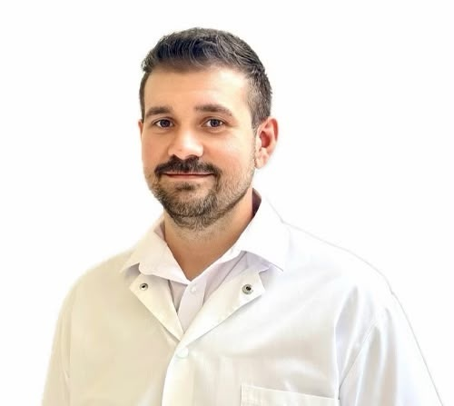
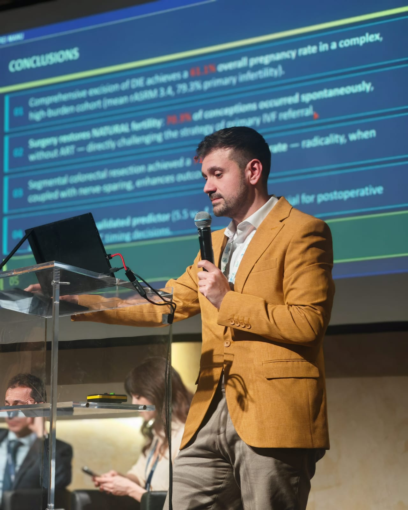

Evaluare atentă, diagnostic cât mai clar și conduită personalizată, cu interes special pentru chirurgia ginecologică minim invazivă și patologia complexă.

Activitatea mea este concentrată pe patologia ginecologică benignă și oncologică, endometrioză, uroginecologie și chirurgie minim invazivă.
Laparoscopie, histeroscopie și chirurgie robotică, în funcție de indicația medicală.
Evaluare, plan terapeutic individualizat și tratament chirurgical al formelor complexe.
Evaluarea și tratamentul patologiei oncologice ginecologice, cu interes pentru abordările minim invazive.
Evaluarea simptomelor de prolaps și incontinență și stabilirea conduitei individualizate.
Formare în laparoscopie, histeroscopie și chirurgie robotică, cursuri internaționale și activitate de cercetare în endometrioză și ginecologie oncologică.
Descoperiți parcursul profesional
Această secțiune va reuni experiențe împărtășite voluntar de paciente, publicate numai cu acordul lor. Experiențele sunt individuale și nu reprezintă o garanție privind rezultatul unui tratament sau al unei intervenții.
Primele experiențe vor fi publicate în curând.
Împărtășiți experiența dumneavoastrăDocumente, analize, pregătire preoperatorie și ce trebuie să aveți la dumneavoastră.
Recuperare, alimentație, tranzit, îngrijirea plăgilor și semne de alarmă.
Ghiduri și materiale care vor fi extinse permanent pe măsură ce apar noi situații practice.